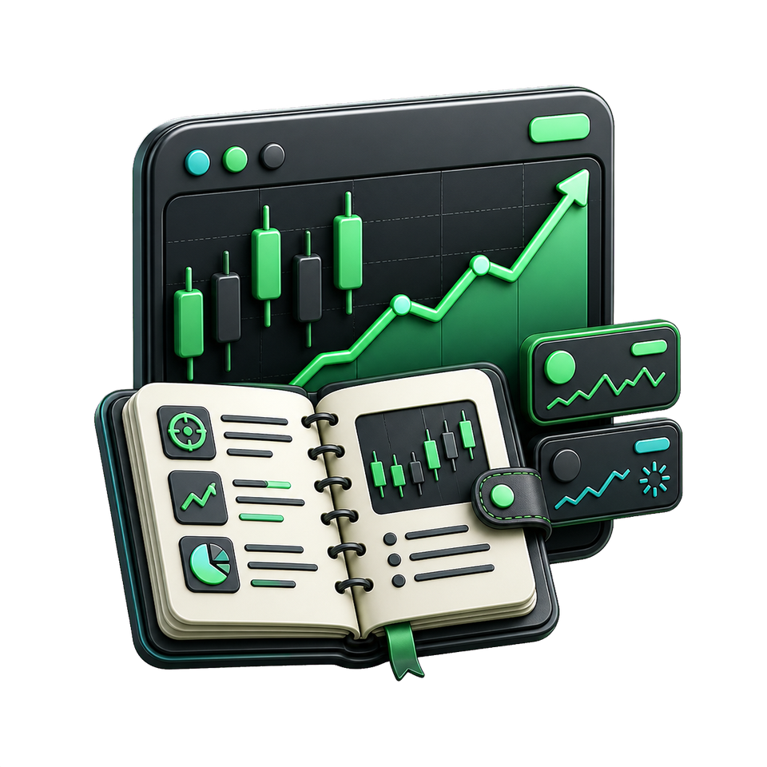
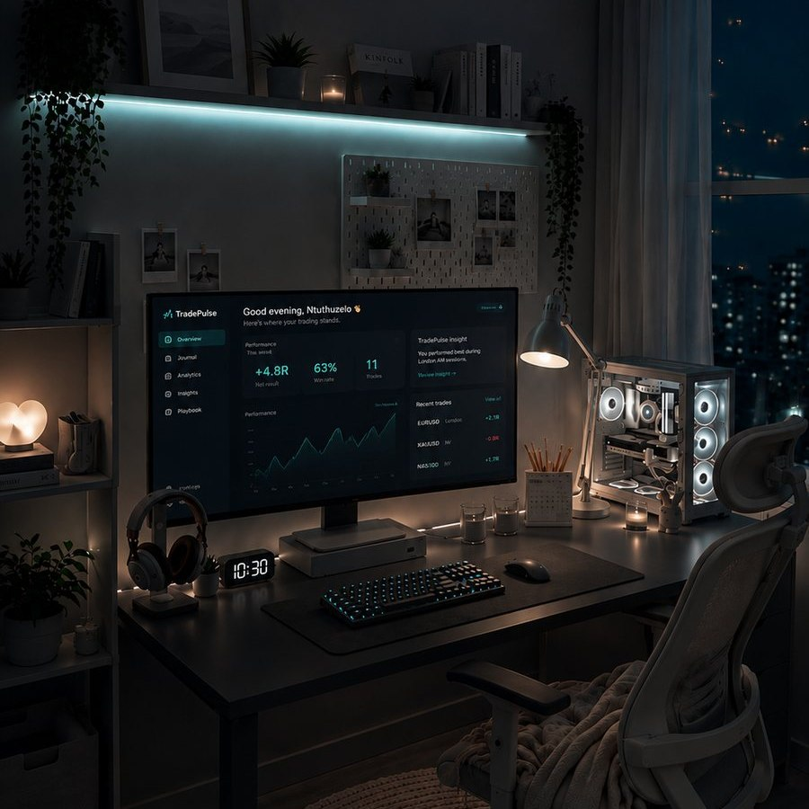
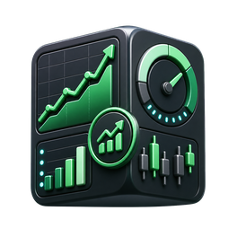

Capture
Import a CSV, read a statement or screenshot with AI, or log the trade yourself. You check every row before it is saved.
TradePulse keeps your executions, screenshots, emotions, and rule checks in one calm review space. See what to repeat, what to remove, and what to carry into the next session.

Built for process review, not dashboard overload.
Clear enough for a solo trader. Structured enough for a desk.
Designed around the trade you just took and the one you will take next.
TradePulse gives each trade a complete record: setup, execution, chart, emotion, risk, and rule score. The layout stays quiet so the reflection can stay honest.

The product is intentionally simple. It helps you finish the day with proof, not another pile of numbers to decode.
Import a CSV, read a statement or screenshot with AI, or log the trade yourself. You check every row before it is saved.
Score your plan, entry, stop, and emotional control without letting profit or loss tell the whole story.

03See calculated observations from your own trades, each with the trades behind it, and decide what to change.
TradePulse shows what your own trades say: which setups and sessions did better or worse, how often you followed your rules, and the evidence behind each observation.
Build a journal that makes your process visible and your next decision clearer.
Start journaling